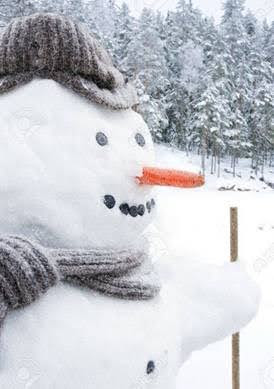

Outdoor Fun
Imagine being outside in the deep snow, refreshing winds in your face with rosy cheeks and maybe even a running nose. There are few things in life that are as entertaining as making a snowman with family and friends. In some places there are strong traditions of Santa Claus and Snowman being the best of friends. This holiday season, welcome Santa Claus in his new suit for a perfect photo op with your families’ traditional snowman. In our shop we supply both a wide range of Santa Claus costumes and carrots of all sizes for the perfect snowman nose.

Ready for outdoor fun? Make sure you have the right gear. Visit our shop to buy your Santa costume and make this winter unforgettable!